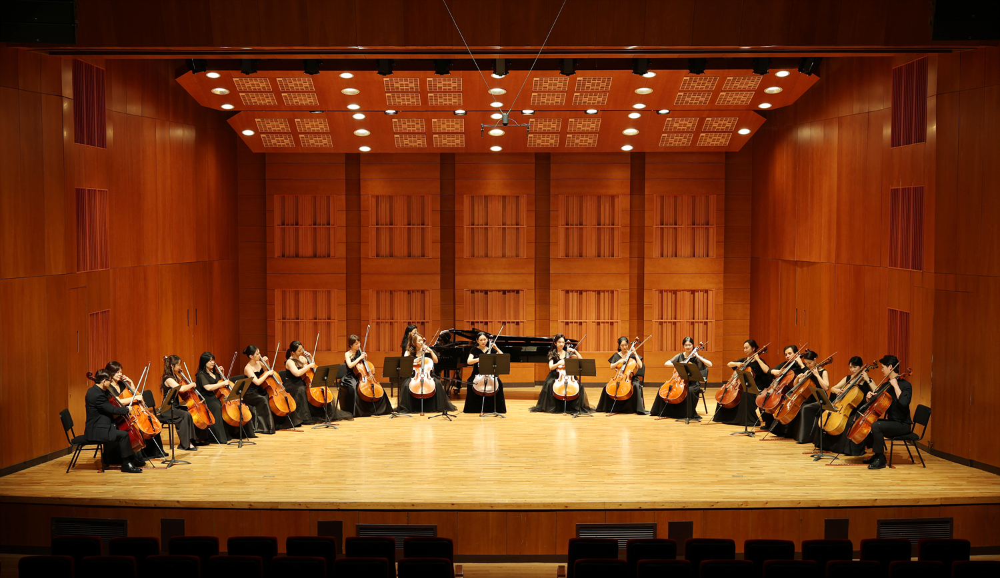
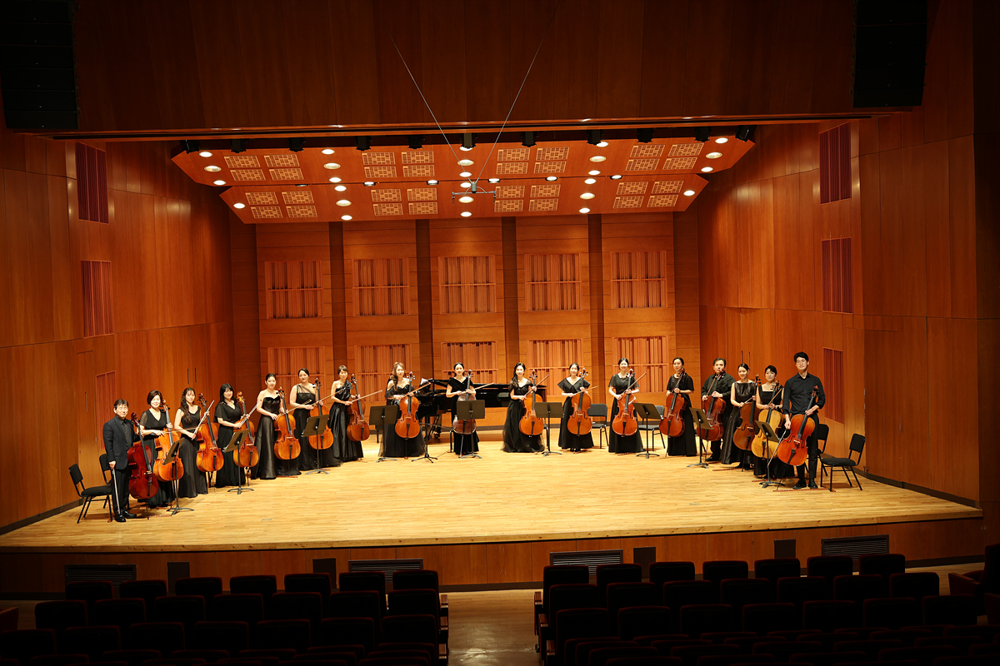
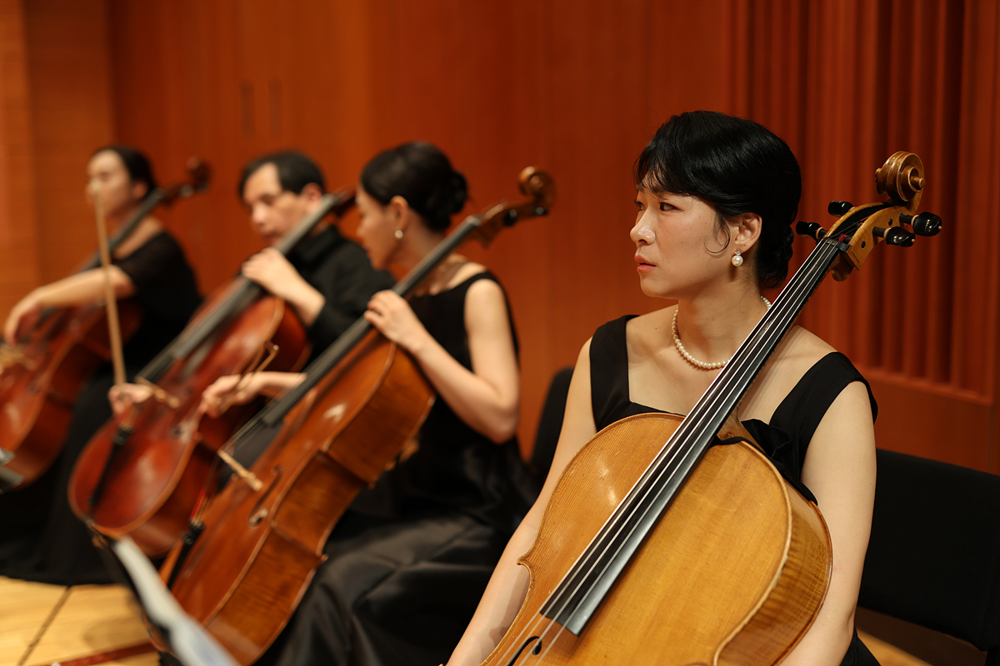
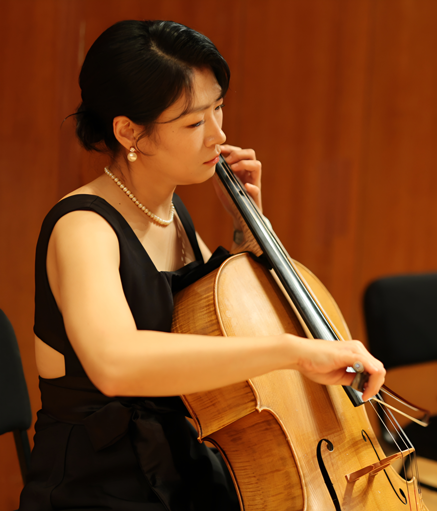

Laboratory of Hearing, Balance and Integrated Neuroscience,
Ear and Interaction Center,
Doheun Institute for Digital Innovation in Medicine (D.I.D.I.M.),
Hallym University College of Medicine, Anyang, Republic of Korea
I am a Research Professor at the Hallym University College of Medicine in Anyang, Republic of Korea.
I work in the Laboratory of Hearing, Balance and Integrated Neuroscience.
My research investigates the neuroscience of musical emotion,
with a particular focus on how the brain processes sound in people with hearing loss.
I completed my second postdoctoral fellowship at the
Mayo Clinic, Department of Neurologic Surgery,
and my first postdoctoral training at the
Institute for Basic Science (KAIST),
in the Systems Neuroscience Laboratory
(the Jung Lab), directed by Min Whan Jung, Ph.D.
I earned my Ph.D. in Neuroscience from Ajou University, where I worked in the same lab before it moved to KAIST.
I also hold an M.S. in Pharmacy from Seoul National University
and a B.S. in Microbiology from Pusan National University.
Until my postdoctoral years, my work centered on animal model neuroscience, using single-unit recording (electrophysiology) to study neural activity.
Motivated by a growing interest in how the brain engages with music, I then transitioned to my current research on the neuroscience of musical emotion in the human brain.
Full details are available in my
curriculum vitae (PDF).
Research
My research focuses on the neuroscience of music and emotion and how the brain
integrates sound — especially music and speech — in people with and without hearing loss.
Full publication record is available on
ORCID,
and related research data & materials are shared on
OSF (Open Science Framework).
(* co-first author · † co-first author)
Peer-reviewed Articles
Lee J, Han JH, Lee H-J (2026). Cortical responses to the lack of high-frequency cues in musical emotion perception.Scientific Reports.
Jeon S-I, Lee J, Han JH, Jeong D, Lee H-J (2026). An automated system for sound localization testing in hearing-impaired listeners.JoVE.
Lee J, Han JH, Lee H-J (2025). Musical training and perceptual history shape alpha dynamics in audiovisual speech integration.Brain Sciences.
Han JH, Jo S, Jeon S-I, Lee J, Lee JH, Lee H-J (2025). Evaluation of the Korean digits-in-noise test to classify the degree of hearing loss.International Journal of Audiology.
Lee J, Han JH, Lee H-J (2023). Development of novel musical stimuli for investigating the perception of musical emotions in individuals with hearing loss.Journal of Korean Medical Science.
Shim L*, Lee J*, Han JH, Jeon H, Hong S-K, Lee H-J (2023). Feasibility of virtual reality-based auditory localization training with binaurally recorded auditory stimuli for patients with single-sided deafness.Clinical and Experimental Otorhinolaryngology.(*co-first author)
Han J-H, Lee J, Lee H-J (2023). The effect of noise on the cortical activity patterns of speech processing in adults with single-sided deafness.Frontiers in Neurology.
Han J-H, Lee J, Lee H-J (2023). Attentional modulation of auditory cortical activity in individuals with single-sided deafness.Neuropsychologia.
Han JH, Lee J, Lee HJ (2021). Ear-specific hemispheric asymmetry in unilateral deafness revealed by auditory cortical activity.Frontiers in Neuroscience.
Lee J, Han JH, Lee HJ (2020). Long-term musical training alters auditory cortical activity to the frequency change.Frontiers in Human Neuroscience.
Han JH, Lee J, Lee HJ (2020). Noise-induced change of cortical temporal processing in cochlear implant users.Clinical and Experimental Otorhinolaryngology.
Han JH, Yi DW, Lee J, Chang WD, Lee HJ (2020). Development of a smartphone-based digits-in-noise test in Korean: a hearing screening tool for speech perception in noise.Journal of Korean Medical Science.
Lee J, Chang SY (2019). Altered primary motor cortex neuronal activity in a rat model of harmaline-induced tremor during thalamic deep brain stimulation.Frontiers in Cellular Neuroscience.
Lee J, Jo HJ, Kim I, Lee J, Min HK, In MH, Knight E, Chang SY (2019). Mapping BOLD activation by pharmacologically evoked tremor in swine.Frontiers in Neuroscience.
Lee J, Han JH, Lee HJ (2019). Auditory cortical temporal processing and hemispheric asymmetry revealed by N1 dipole source activity in adult cochlear implant users.Korean Journal of Otorhinolaryngology-Head and Neck Surgery.
Lee J, Han JH (2019). The effect of noise on cortical auditory evoked potential in cochlear implant users.Audiology and Speech Research.
Lee J, Kim IY, Lee J, Knight E, Cheng L, Kang SI, Jang DP, Chang SY (2018). Development of harmaline-induced tremor in a swine model.Tremor and Other Hyperkinetic Movements.
Han J, Lee JH, Kim MJ, Jung MW (2013). Neural activity in mediodorsal nucleus of thalamus in rats performing a working memory task.Frontiers in Neural Circuits.(co-first authorship)
Kim J, Ghim JW, Lee JH, Jung MW (2013). Neural correlates of interval timing in rodent prefrontal cortex.Journal of Neuroscience.
Manuscripts in Progress
Kim SY†, Lee J†, Lee YE, Lee H-J*, Lee M*. Frequency-aware emotional EEG decoding under auditory spectral degradation.(Under review, Affective Computing; †co-first author)
Jo S*, Lee J*, Lee H-J. Differential effects of aging and high-frequency hearing loss on the perception of meter, harmony, and timbre in music.(In preparation; *co-first author)
Han JH*, Lee J*, Lee H-J. Brain oscillations in hearing loss and mild cognitive impairment during speech-in-noise tests.(In preparation; *co-first author)
Patent
Han J-H, Lee H-J, Lee J, Lee D (2025). Automated method and system for testing sound localization ability (소리 방향성 분별능의 자동 검사 방법 및 시스템).Registration No. 10-2778770.
Beyond Research
Learning the Cello
Outside of the lab, I have been learning to play the
cello
since 2019. As someone who studies how the brain perceives music and emotion,
I find it especially meaningful to experience music-making from the inside — it trains
patience, attention, and a feel for structure and timing in a very different way than science does.
The same disciplined, iterative practice that drives good research also applies to
learning an instrument, and it gives me a fresh perspective on the
musical emotions I study every day.
Cello Orchestra
I am a member of the DoDo Cello Orchestra. Below are photos and the concert poster
from our 2025 program (Dec 20, 2025 · Kwanglim Art Center, Jangcheon Hall).




My Recordings
Our album “With” is available on
Apple Music.
I played second cello on track 9,
Slavonic Dance, Op. 72 No. 2 (Dvořák).